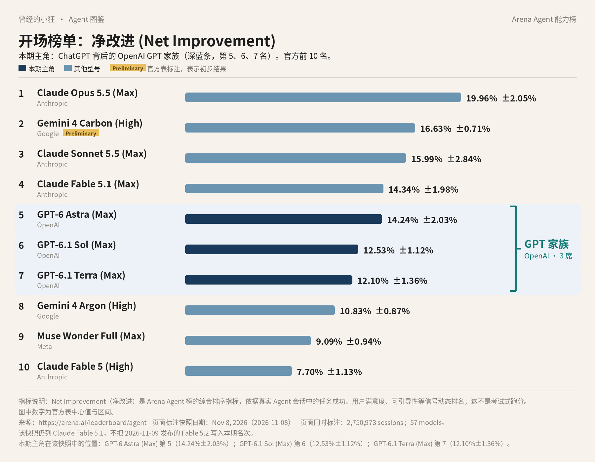

曾经的小狂 · Agent 图鉴 第 2 篇
很多人认识 AI 助手，是从 ChatGPT 开始的。可你要是去翻今天这张 Agent 榜，从第 1 名一路看到第 57 名，「ChatGPT」这几个字母一次也不会出现。
不是它没上榜。榜上记的是模型的名字，不是 App 的名字。你看图里那三条深蓝色的：

Arena Agent 综合榜前十（净改进，2026 年 11 月 8 日快照）。深蓝条和右侧括号标出的是 OpenAI 的 GPT 家族：第 5、6、7 名。数据来源：arena.ai/leaderboard/agent。
第 5 名 GPT-6 Astra (Max)，净改进 14.24%±2.03%；第 6 名 GPT-6.1 Sol (Max)，12.53%±1.12%；第 7 名 GPT-6.1 Terra (Max)，12.10%±1.36%。三行挨着排，厂商栏写的都是 OpenAI。前十里，OpenAI 一家占了三个位置。ChatGPT，就是装着这些 GPT 模型的那个产品。
这一篇就顺着这三条深蓝往下聊：它们各是什么来头，在 ChatGPT 里从哪扇门进去用，要花多少钱，以及咱们在国内最关心的那个问题。
这张图来自 Arena 的 Agent Arena 综合榜，网址是 arena.ai/leaderboard/agent。Arena 的前身，就是很多人听过的 LMSYS Chatbot Arena。这里用的是官网印着 2026 年 11 月 8 日的那一版，一共 57 个模型，攒了 2,750,973 次会话。整个《Agent 图鉴》系列都用这一版，后面不换数。
它跟你印象里的跑分榜不太一样。Arena 有个 Agent 模式，真实用户在里面让 AI 写代码、查资料、做文件，每次会话背后派哪个模型，是随机分的。平台再从这些会话里收信号：用户最后有没有点「完成」，夸得多还是骂得多，被纠正之后改没改对，跑命令出错后多久能缓过来，有没有凭空编出一个根本不存在的工具。
「净改进」就是把这些信号合起来算出的一个数，英文叫 Net Improvement。它回答的问题是：同样的活，换成这个模型来干，比起随便抽一个模型的平均水平，结果能好出多少。正数说明比平均强，负数说明拖了后腿。所以 14.24% 不是「成功率 14%」，千万别这么读。
后面那个「±」也要看一眼。它是 95% 置信区间，可以理解成「真实数字大概在这个范围里晃」。第 4 名 Claude Fable 5.1 (Max) 是 14.34%±1.98%，第 5 名 GPT-6 Astra 是 14.24%±2.03%，中心值只差 0.10 个百分点，两段区间几乎整个叠在一起。这两名谁先谁后，其实分不太开。
模型名后面括号里的 Max、High、xHigh，是官方标注的推理档位，你就当成「这次开到了几档力气」，不是另一个模型。前十里第 2 名 Gemini 4 Carbon (High) 带 Preliminary 标记，意思是初步结果。Claude Fable 5.2 是 11 月 9 日发布的，比这版快照晚了一天，所以不在里面。
同一家的三个模型挤在一起，正好说明 OpenAI 现在的路数：不是一个模型包打天下，而是一族模型，按力气和价钱分档。
GPT-6 Astra 是这一族里最强、也最贵的那个，2026 年 9 月发布。OpenAI 自己的说法是「世界上最聪明、对齐得最好的模型」，这是公司的自我介绍，听听就好。榜上能看到的是：它排第 5，是 OpenAI 在这张表上最高的一行。
GPT-6.1 Sol 是 9 月 29 日出来的，OpenAI 给它的定位是「接近 Astra 的能力，五分之一的价钱」。GPT-6.1 Terra 更轻、更快、更省，官方说它擅长看图、操作电脑和写东西，官方的 API 标价是 6.1 Sol 的一半。
这张榜还有一列挺实在，叫每个任务花费的中位数（Cost/Task P50）。同一版快照里，Astra 是 6.32 美元，6.1 Sol 是 1.04 美元，6.1 Terra 是 0.88 美元。名次只差一两位，花费能差出好几倍。对要大量干活的人来说，这一列可能比名次更值得看。
再往下翻，GPT 的名字还会出现好几次：第 12 名 GPT-6 Sol (Max)，7.00%±1.55%；第 15 名 GPT-5.6 Sol (xHigh)，4.53%±1.08%；第 23 名 GPT-6 Luna (Max)，1.52%±0.45%。Luna 这一行有 228,261 次会话，是全表会话最多的一行。
OpenAI 在官网上给自己的定义是「一家 AI 研究和部署公司」，它的使命，是让通用人工智能（AGI）惠及全人类。这里的 AGI，官方的解释是「整体上比人更聪明的 AI 系统」。
它的结构有点绕：上面是非营利的 OpenAI Foundation，下面是营利性的 OpenAI Group，后者以公益公司（public benefit corporation）的形式运营，由基金会管着。你可以简单理解成：一个非营利组织，管着一家要赚钱、但章程里写了公益目标的公司。
现在打开 ChatGPT，你会发现它被分成了几块。官方帮助中心是这么分的：Chat 用来快速对话、问问题、搜索、头脑风暴；Work 是一个 Agent，专门干更长、要好几步、最后得交出成品的活；Codex 专门写代码。理解今天的 ChatGPT，先记住这张地图。
顺便把 Agent 说清楚。它就是会自己动手的 AI：你交代一个目标，它会把活拆成几步，自己调工具、开网页、写文件，挨个做完，中间该问你的再停下来问你。
先说 Chat。付费用户在模型菜单里选 GPT-6 之后，可以拖一个思考滑块：Instant、Medium、High、Extra High 这几档由 GPT-6 Sol 驱动；最高的 Pro 档叫 GPT-6 Pro，背后是 GPT-6 Astra。免费版和 Go 版用的是 GPT-5.6 Luna，想让它多想一会儿可以点 Think，用的也还是 Luna。档位越高，通常越慢，也越吃额度。
GPT-6 在 Chat 里还带来一个新东西，官方叫 Intelligent UI：回答里可以夹着图表、可视化和能点的小组件，不用你专门提要求。它只在 Instant 到 Extra High 这几档里有，Pro 档没有；老版本的 Mac、Windows 桌面客户端用不了这个功能，官方让你换到网页上用。
再说 Work。你把要交的东西讲清楚，比如一份调研、一张表、一套幻灯片、一个网页，它会自己去查、去算、去做，中间你可以插话改方向，重要的动作要你点头。在网页和手机上，Work 跑在云端；在桌面应用里，经你允许，它还能用你电脑上的文件和应用。它还能定时跑，或者在 Gmail 来新邮件、Slack 有新消息、GitHub 有新的 PR 动态时自动开工。这种事件触发，免费版和 Go 版用不了。
如果你以前用过 ChatGPT 的「agent 模式」，要知道帮助中心那篇介绍开头已经写明：ChatGPT agent 已经不再提供，长任务请改用 Work。那篇页面后半截还留着一些旧的用法和条数，别照着它们去规划。
Codex 是写代码的那扇门。它能写代码、修 bug、跑测试和命令、审代码改动，直接对着你的代码仓库干活。入口有好几个：ChatGPT 桌面应用里的 Codex 模式、终端里的 Codex CLI、编辑器插件，还有网页版。官方写明，Codex 各档都有，连免费版和 Go 版也有。但 Codex Cloud，也就是把任务丢到 OpenAI 的云端电脑上跑、你电脑睡着了也能继续的那种，免费版和 Go 版没有。
还有个容易糊涂的地方：GPT-6.1 Sol 和 GPT-6.1 Terra 这两个榜上的模型，只出现在 Work 和 Codex 里，普通 Chat 对话里选不到。GPT-6.1 Sol 在 Work 和 Codex 里的默认上下文是 50 万 tokens。token 是模型计量文字的单位，上下文就是它一次能「看进去」的材料长度，50 万 tokens 意味着能塞进很长很长的资料。Plus 用户在 Work 和 Codex 里也能用 Astra，只是量有限。
最后还有一个更新的东西，叫 dots。官方把它叫作「always-on」的 Agent：每个 dot 配了一台自己的云端电脑，带浏览器，你不跟它说话的时候，它也能接着推进项目，还能在 Slack、Teams 里跟你对话。它最早由 GPT-6 Astra 驱动，11 月 3 日官方又把 GPT-6.1 Terra 加了进来。个人用户要订 Pro 才有，还得年满 18 岁，欧洲经济区、瑞士和英国暂时不在范围里；团队要 Business Premium。官方也提醒，dot 会出错，重要结果要自己再看一遍。
以下都是官方的美元标价，不含税，官方也写了价格可能调整。个人方案一共五档。
Free 免费，日常文字聊天官方写的是不限条数，但有防滥用限制，上传文件、生成图片、语音这些另有额度。Go 是便宜的那一档，2026 年 1 月 16 日推向全球时，OpenAI 公布的美国价是每月 8 美元，部分市场按当地定价。Plus 每月 20 美元。Pro 分三档：Pro 100、Pro 200、Pro 500，分别是每月 100、200、500 美元。
这几档个人方案都只能按月付。帮助中心写明，不支持年付，也不能一次预付好几个月。
几档差在哪？Plus 在 Chat 里能用 GPT-6 的 Medium 和 High，但没有 Extra High，也没有 Pro 档。Pro 三档都带 GPT-6 Pro，也就是 Astra 那一档，还带 dots 和每月的 API 额度，额度多少以定价页为准。三档 Pro 主要差在用量。Pro 500 是唯一带 Ultrafast 的：这个模式让 Astra 和 6.1 Sol 出字更快，但套餐内按标准速度的 8 倍扣额度，额度用完后再按积分价的 6 倍扣。
注意，订了 Pro 也不等于能无限用 Astra。帮助中心写得很直接：GPT-6 Pro 有用量上限，Pro 订阅不包括无限使用。额度用完了，客服也不能帮你重置，只能等它刷新，或者换别的模型。
团队用的是 Business。标准席位按月付每人每月 25 美元，按年付折合每人每月 20 美元；高级席位按月付 125 美元，按年付 100 美元，Work 和 Codex 的用量更高，也没有 5 小时用量限制。最少要 2 个席位。更大的 Enterprise 要找销售谈。
开发者走 API，是另外一本账，订了 ChatGPT 也不包含 API 用量。官方 API 定价页的标准价，按每百万 tokens 的输入和输出算：GPT-6 Astra 10 / 50 美元，GPT-6.1 Sol 2 / 10 美元，GPT-6.1 Terra 1 / 5 美元，GPT-6 Luna 0.10 / 0.50 美元。输入超过 27.2 万 tokens 算长上下文，价格更高；不着急要结果的批量任务（Batch），价格是标准价的一半。
这个问题，OpenAI 有一份直接的名单：帮助中心的「ChatGPT Supported Countries」，列出了支持访问的国家和地区。我这次打开看，中国大陆不在名单上，香港和澳门也不在；台湾在列。官方还写了一句：不在名单上的地方去用，或者在那儿替别人开通，账号有可能被封或被停用。
所以我不会跟你说「打开就能用」。官方页面上也没有面向中国大陆的人民币价目。付款方面，定价页写的是个人方案和 Business 可以用主流信用卡；Go 的说明里写，付款方式因国家而异。
说完价钱，按用法给你对一下号。下面只是把官方写的能力和档位对上，不是我替你做的消费建议。
只想聊天、问问题、偶尔让它帮忙写点东西：Free 就能开始，日常文字聊天官方写的是不限条数。要是上传文件、做图、语音这些额度不够用，再看 Go。
想让它交出完整的东西，比如一份调研报告、一套幻灯片：要用 Work。Work 只对符合条件的付费方案开放，Plus 的定价页卖点里就写着 Work，Chat 里 GPT-6 的 Medium 和 High 也从 Plus 开始有。
天天写代码：Codex 免费版就能先上手试；想把任务丢到云端跑、电脑合上也不停，要 Plus 或以上。
想在 Chat 里直接用 Astra 那一档，或者想要一个常驻的 dot：得上 Pro。这时候先想清楚自己每周大概要用多少，三档 Pro 差的主要就是量。
两个人以上一起用、要统一管账号：看 Business，最少两个席位，团队数据默认不拿来训练。
第一，它会出错，也会被拦。OpenAI 在 Astra 的发布说明里自己写了：额外的安全检查有时会让正常工作变慢、暂停甚至停下，比如一些网络安全方面的任务，在 ChatGPT 和 Codex 里可能会停下来让你确认。
第二，数据怎么用，要自己去设置。帮助中心写，Plus 和 Pro 的对话可能被用来改进模型，除非你在数据控制里把训练关掉；Business、Enterprise 这些团队方案，默认不拿来训练。
第三，榜和产品都在快速变。这张榜是 11 月 8 日那一版；模型菜单里有什么，帮助中心也写了要以你账号里实际看到的为准。真要下单，先打开 chatgpt.com/pricing 再看一眼。
最后记三句就够：榜上写的是 GPT，不是 ChatGPT，前十里它有三席；日常问答用 Chat，要交成品用 Work，写代码用 Codex；想用最强的 Astra，要么上 Pro，要么在 Plus 的 Work 和 Codex 里省着用。
下一篇，我们把榜单往下多翻几行，去找 Grok。
署名：刀哥
来源清单：
https://arena.ai/leaderboard/agent
https://arena.ai/blog/agent-arena-methodology
https://openai.com/about
https://openai.com/index/gpt-6-astra/
https://openai.com/index/introducing-gpt-6-sol-and-luna/
https://openai.com/index/introducing-gpt-6-1-sol/
https://openai.com/index/introducing-gpt-6-1-terra/
https://openai.com/index/introducing-dots/
https://help.openai.com/en/articles/20001354-gpt-6-and-other-models-in-chatgpt
https://help.openai.com/en/articles/20001275-chatgpt-work-and-codex
https://help.openai.com/en/articles/11752874-chatgpt-agent
https://help.openai.com/en/articles/11369540-using-codex-with-your-chatgpt-plan
https://help.openai.com/en/articles/20001530-getting-started-with-your-dot
https://chatgpt.com/pricing
https://openai.com/index/introducing-chatgpt-go/
https://help.openai.com/en/articles/11989085-what-is-chatgpt-go
https://help.openai.com/en/articles/6950777-what-is-chatgpt-plus
https://help.openai.com/en/articles/9793128-about-chatgpt-pro-tiers
https://help.openai.com/en/articles/8792828-chatgpt-business-overview
https://developers.openai.com/api/docs/pricing
https://help.openai.com/en/articles/7947663-chatgpt-supported-countries